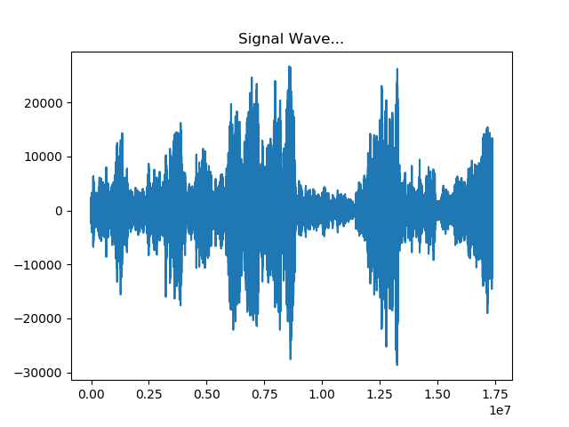
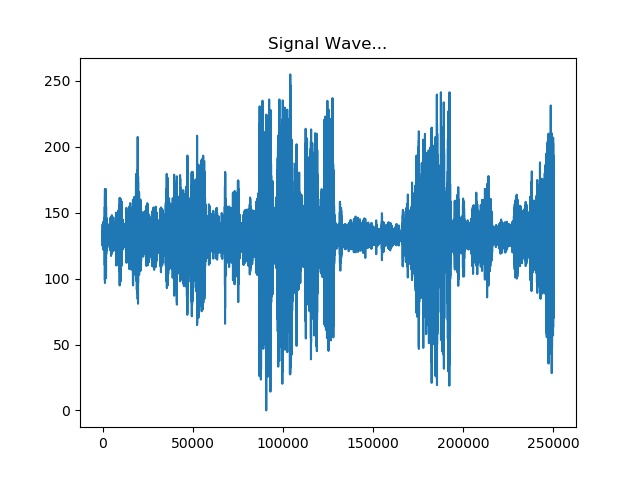
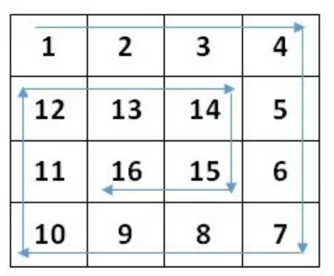
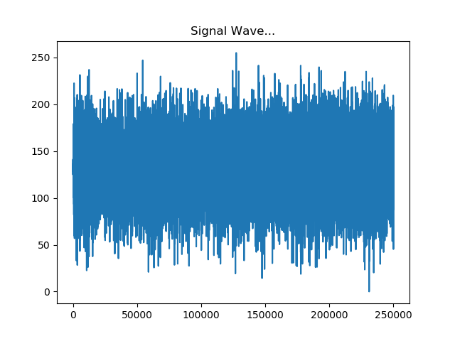
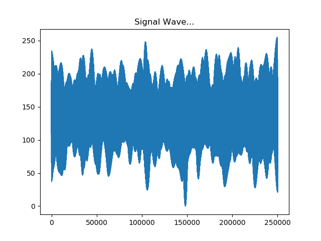

Thomas Klimek Samuel Oakley
Audio Files analyzed using python, numpy, scipy. First we read in a .wav file using python.
Then we calculate our image dimensions, for example 500 * 500, and trim our array length so we are eveny divisible. After that we downsample the audio by taking the average over evenly divisible intervals, ending up with our array length being 500 * 500. Then we scale to rgb space 0-255.
Then we encode the 1 dimension array into a 2 dimension format using a spiral algorithm moving inwards. This is so no information is lost on the edges of the photo.
Lastly, we apply gaussian noise to the signal wave to smooth out terrain. Our final result is a heightmap written in pgm format.
